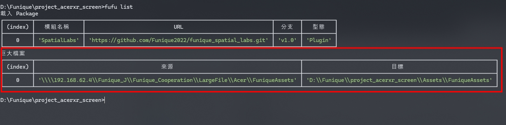

概念
用比較簡單的形容就是. 專案分成了 大型檔案, 組件, 外殼 這三種類別,而 Fufu 可以省略同步版本時 重複性高的步驟.
大型檔案
影片, 模型, 等等大型檔案, 通常會放置 NAS 磁碟槽. Github 在大於 50 MB 的檔案必須使用 LFS 進行做存放, 其上限也只是 2GB. 無法用於實際開發環境使用. (容量過小)
而每次專案的拉取或是更新便要從 NAS 拉取檔案則是緩慢的. 在尋找資料夾的過程會消耗不少時間.
此工具的方案是將複製路徑與對象路徑保存在配置檔案, 並且聆聽 CLI 的指令事件進行複製與備份的動作. 這樣便能實踐一鍵複製的動作.
# 複製下來
fufu copy
# 上傳上去
fufu submit
# 加入路徑
fufu filepath <NAS路徑> <相對路徑>
# 加入路徑 範例
fufu filepath \\192.168.361.2\Funique_J\XXX\XXX Assets\Plugins
# 查看目前配置
fufu list
在加入路徑後 可以打入以下指令 查看目前的配置
fufu list

組件
獨立可以匯入的 Repo, 有獨立版本控制的組件. 此乃模組化的需求, 主要的面對多個專案的重複使用.
專案的組件可以被註冊到 CMS 上, 然後用代號進行 Call
Tip
關於 CMS 的帳號密碼, 請於管理人員提供
Warning
在使用 update 以前, 確保有 github 團隊的權限, 否則拉取組件會失敗. 畢竟組件本身設定為私人的
# 查看 CMS 上的組件
fufu listr
# 加入組件
fufu add <組件代號> <分支>
fufu add 0 v1.0 # 使用分支 v1.0
fufu add 0 . # 使用預設分之
# 加入組件 URL
fufu add_url <Repo連結> <資料夾名稱> <分支> <組件/整合專案>
# 組件/整合專案 會決定去 Scripts 或是去 FuniquePlugin
# 如果為 1:Scripts 則名稱會被忽略掉
fufu add_url https:\\github\xxx\xxx.git XXX v1.0 0 # 資料夾名稱為 XXX 分支為 v1.0
fufu add_url https:\\github\xxx\xxx.git XXX . 0 # 資料夾名稱為 XXX 分支為預設
fufu add_url https:\\github\xxx\xxx.git XXX v1.0 1 # 資料夾名稱為 Scripts (因為為整合專案, 路徑則固定在 Assets\Scripts) 分支為 v1.0
外殼
跟著專案 Repo 一起的資料, 通常是一些設定, Unity 插件. 此 CLI 專案管理工具同時也提供了一鍵專案架設方案. 在拉取專案的同時會執行以下動作
- 拉取所有配置檔案的組件
- 拉取所有 NAS 上的大型檔案
所以在拉取結束的時候, 專案會完整地被建立起來
# 查看 CMS 上的專案
fufu listp
# 拉取專案
fufu project <代號> <分支>
# 拉取專案 URL
fufu project_url <專案連結> <分支>
以下為指令的過程解頗